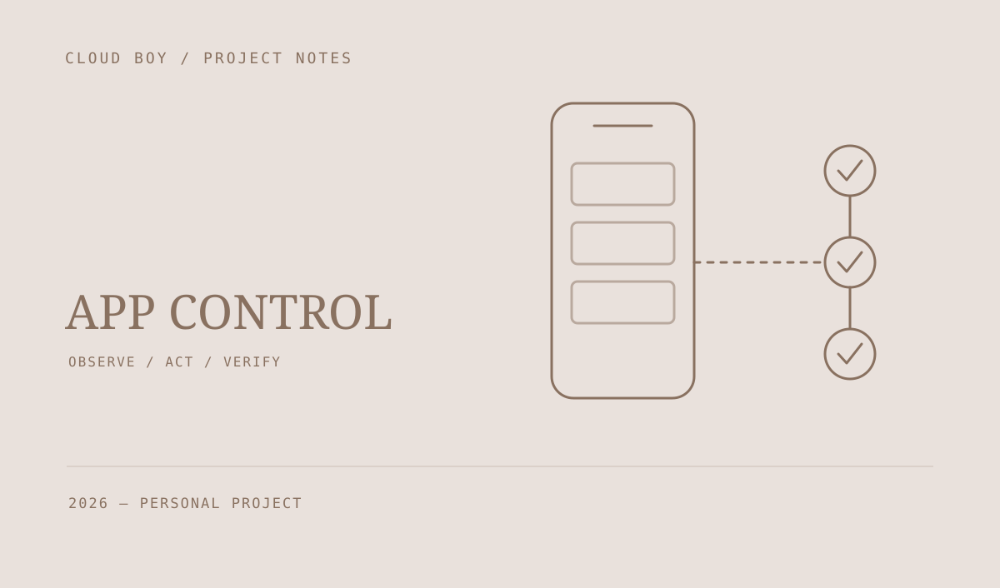
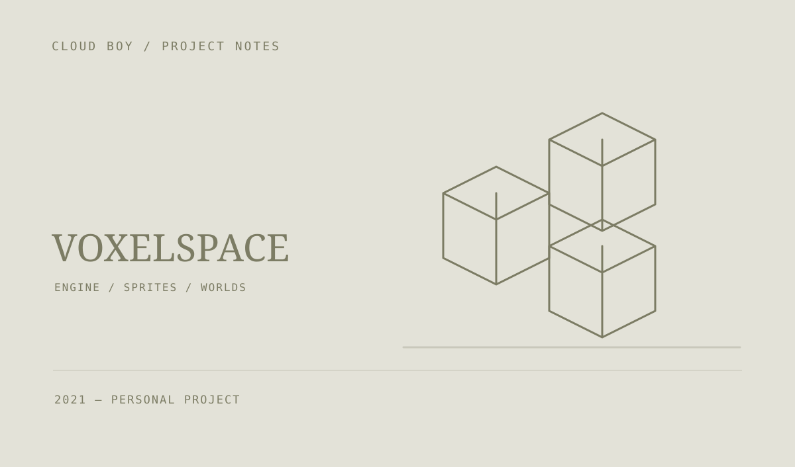

项目示意图 · 非运行截图作品集
做过的作品，正在进行的尝试。
共 19 件作品
 项目控制台截图
项目控制台截图

项目示意图 · 非运行截图
项目示意图 · 非运行截图
项目示意图 · 非运行截图
项目示意图 · 非运行截图 项目示意图 · 非运行截图
项目示意图 · 非运行截图
 项目示意图 · 非运行截图
项目示意图 · 非运行截图
 实际渲染截图
实际渲染截图
AI Wallpaper Workshop
包含蓝天湖景列车、星空列车两个运行案例，以及分层制作、质量检查与离线导出的两份 Skill。提供 TA 拆解、Shader 实现和本地运行文档。
 实际游戏截图
实际游戏截图
 学习 Demo 实际截图 · 非原作画面
学习 Demo 实际截图 · 非原作画面
Hades 学习 Demo · 冥界试炼
基于 Godot 的三房间动作游戏学习 Demo，包含战斗、奖励与祝福选择、Boss 波次及胜负结算。提供 Windows 版本和中文游戏界面；项目非官方，仅限非商业学习。
 实际应用截图 · 演示数据
实际应用截图 · 演示数据

项目示意图 · 非运行截图 角色肩袖修正前后对比
角色肩袖修正前后对比
Video to Game Animation
面向 Agent 的视频参考转游戏角色动画 Skill，包含姿态估计、动作重定向、步态协调、蒙皮诊断和 Blender 复验。提供脚本、修订对比与测量数据，需结合具体角色配置和验证。

项目示意图 · 非运行截图 项目示意图 · 非运行截图
项目示意图 · 非运行截图

项目示意图 · 非运行截图 项目示意图 · 非运行截图
项目示意图 · 非运行截图
暂时没有找到
换个关键词，或试试其他分类。
更多创作，慢慢更新公开源码项目 ↗